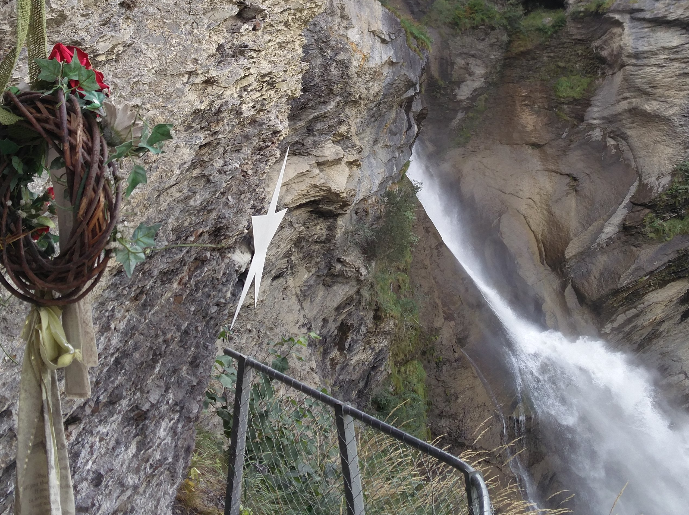
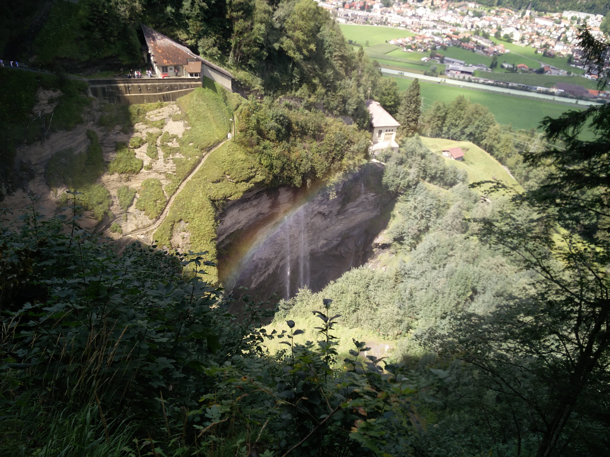
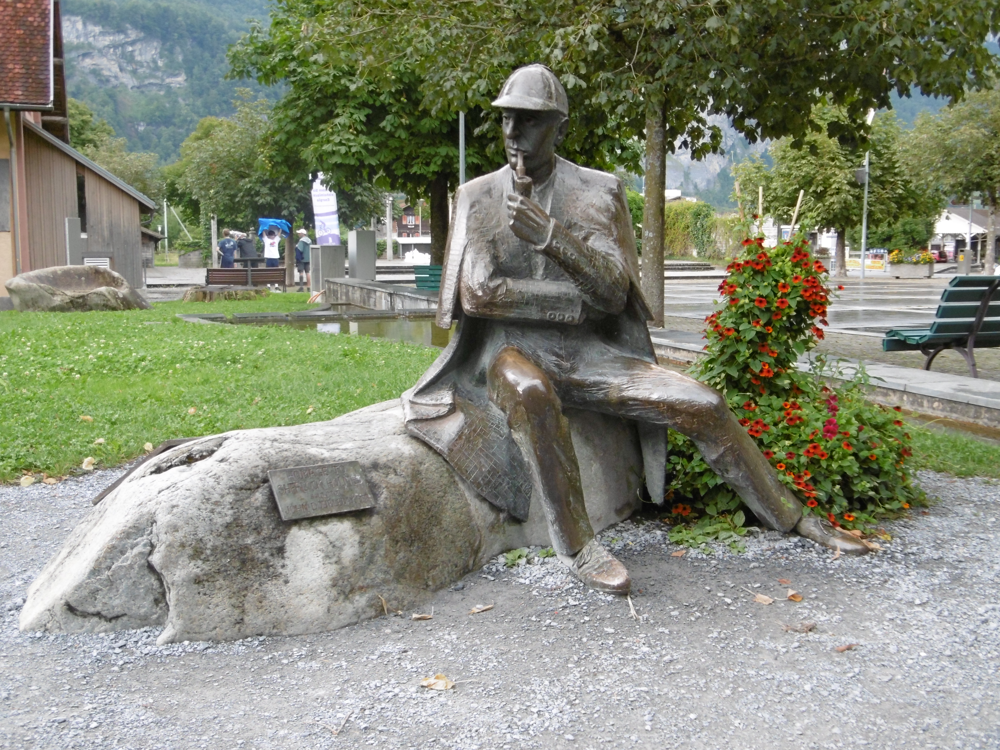
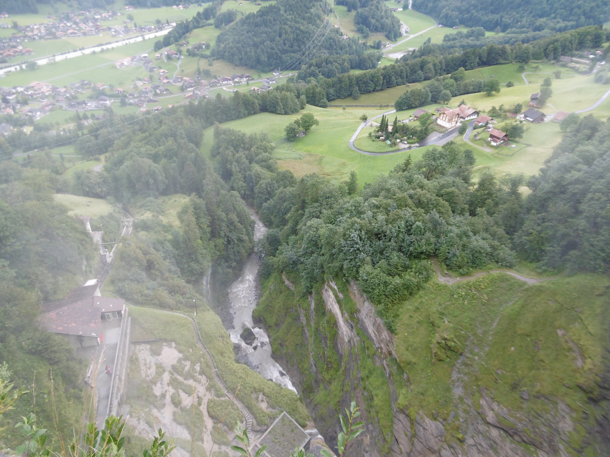
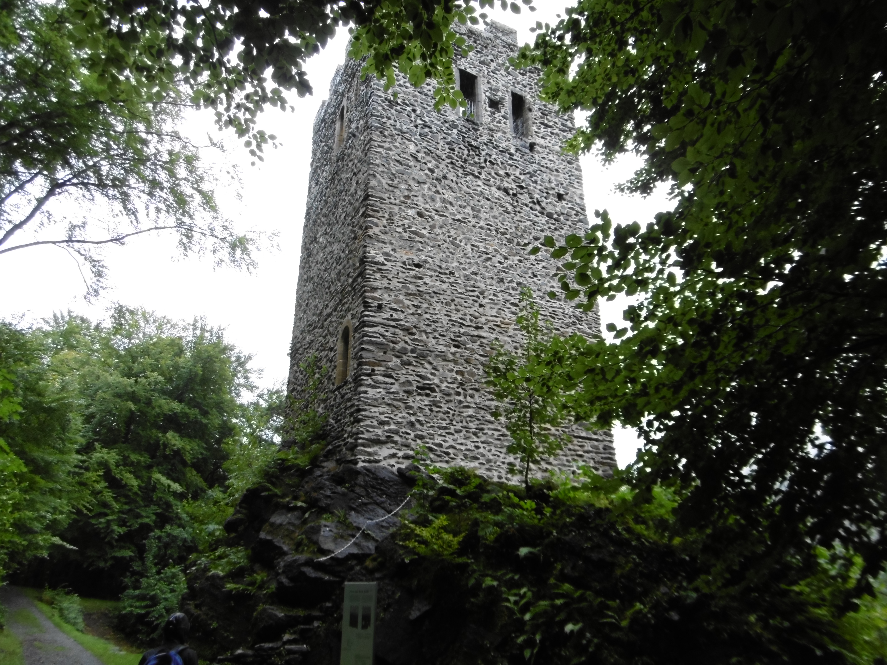

Miejsce pojedynku Sherlocka Holmesa i Profesora Moriarty'ego

Widok z półki skalnej, na której odbył się pojedynek, na stację kolejki Reichenbach.

Pomnik przedstawiający Sherlocka Holmesa na Casinoplatz

Główna ulica Meiringen

Widok na miasto

Jedyna pozostała baszta zamku Rosti